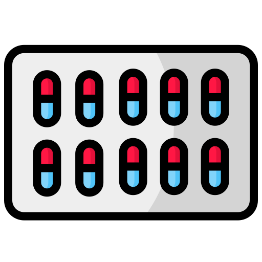
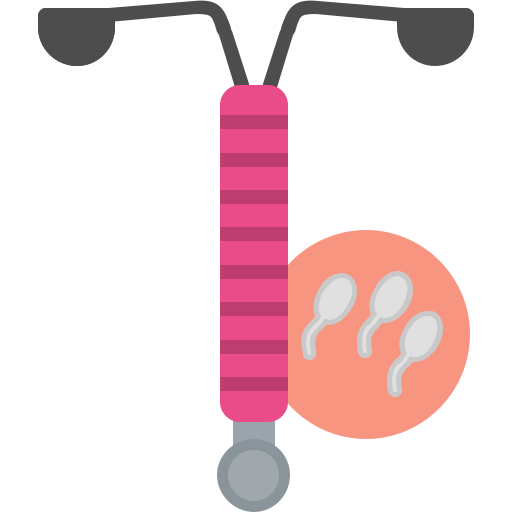
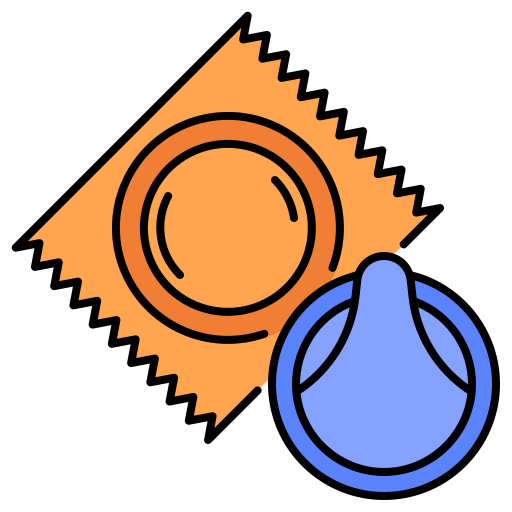
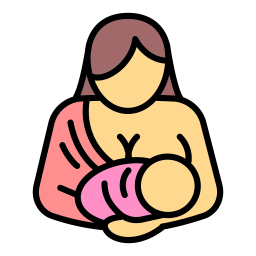

Konseling ABPK
Alat Bantu Pengambilan Keputusan (ABPK) adalah panduan bagi Bidan dan Ibu untuk memilih metode KB yang paling sesuai.
- Membantu Ibu memilih metode sesuai kebutuhan.
- Memberikan informasi medis yang akurat.
- Menghilangkan mitos/ketakutan tentang KB.
Pilihan Metode Kontrasepsi
Klik pada gambar/nama alat untuk melihat detail:
 KB Suntik (1 & 3 Bulan)
KB Suntik (1 & 3 Bulan)
Keuntungan: Efektif, praktis, tidak ganggu hubungan intim.
Kerugian: Gangguan haid, berat badan bisa naik.
Kerugian: Gangguan haid, berat badan bisa naik.
 Pil KB
Keuntungan: Kesuburan cepat kembali, kurangi nyeri haid.
Kerugian: Harus disiplin diminum tiap hari di jam yang sama.
Kerugian: Harus disiplin diminum tiap hari di jam yang sama.
 Implan (Susuk)
Implan (Susuk)
Keuntungan: Jangka panjang (3 tahun), tidak mengandung estrogen.
Kerugian: Perubahan pola haid, perlu tindakan bedah kecil.
Kerugian: Perubahan pola haid, perlu tindakan bedah kecil.
 IUD (Spiral)
Keuntungan: Jangka sangat panjang (8-10 thn), non-hormonal.
Kerugian: Haid bisa lebih lama/banyak, risiko infeksi jika tak bersih.
Kerugian: Haid bisa lebih lama/banyak, risiko infeksi jika tak bersih.
 Kondom
Keuntungan: Cegah IMS/HIV, mudah didapat, tanpa hormon.
Kerugian: Efektivitas rendah jika cara pakai salah, risiko robek.
Kerugian: Efektivitas rendah jika cara pakai salah, risiko robek.
 Metode Amenore Laktasi (MAL)
Keuntungan: Gratis, alami, dukung ASI Eksklusif.
Kerugian: Hanya berlaku 6 bulan & jika belum haid sama sekali.
Kerugian: Hanya berlaku 6 bulan & jika belum haid sama sekali.
🔍 Skrining Kesehatan Reproduksi
Pilih "Ya" jika Ibu mengalami gejala berikut:
| Kondisi Ibu | Ya | Tidak |
|---|---|---|
| Perubahan bentuk/benjolan/cairan pada payudara (SADARI) | ||
| Keputihan berbau/gatal/warna tidak normal | ||
| Benjolan/kutil/luka di area vagina | ||
| Nyeri/perdarahan saat/setelah berhubungan | ||
| Nyeri saat BAK atau teraba benjolan di perut |
🎀 Cara SADARI (Periksa Payudara Sendiri)
Lakukan 7-10 hari setelah menstruasi selesai:
1. Di Depan Cermin: Angkat kedua tangan, cek apakah ada kerutan atau tarikan pada puting.
2. Gerakan Memutar: Tekan perlahan payudara dengan 3 jari (telunjuk, tengah, manis) dari arah luar ke dalam menuju puting.
3. Cek Cairan: Pencet puting perlahan, pastikan tidak ada cairan berwarna/darah yang keluar.
4. Area Ketiak: Lakukan perabaan hingga area ketiak untuk mengecek benjolan.
📅 Kalkulator & Reminder
🌸 Kalkulator Masa Subur
Input Hari Pertama Haid Terakhir (HPHT):
Siklus rata-rata (Hari):
⏰ Reminder KB Suntik
Tanggal Suntik Terakhir:
Ingat!
Pilihlah metode kontrasepsi yang sesuai dengan kondisi kesehatan dan rencana masa depan keluarga Ibu.